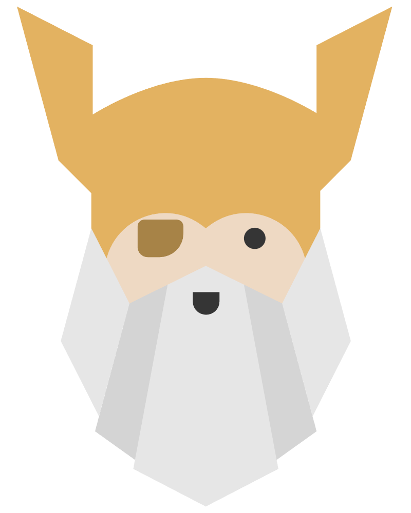

This project was made as the part of The Odin Project curriculum. the original project was to make a recipes page with only using HTML, but since I'm already somewhat comfortable with HTML and CSS I decided to use both.
My links